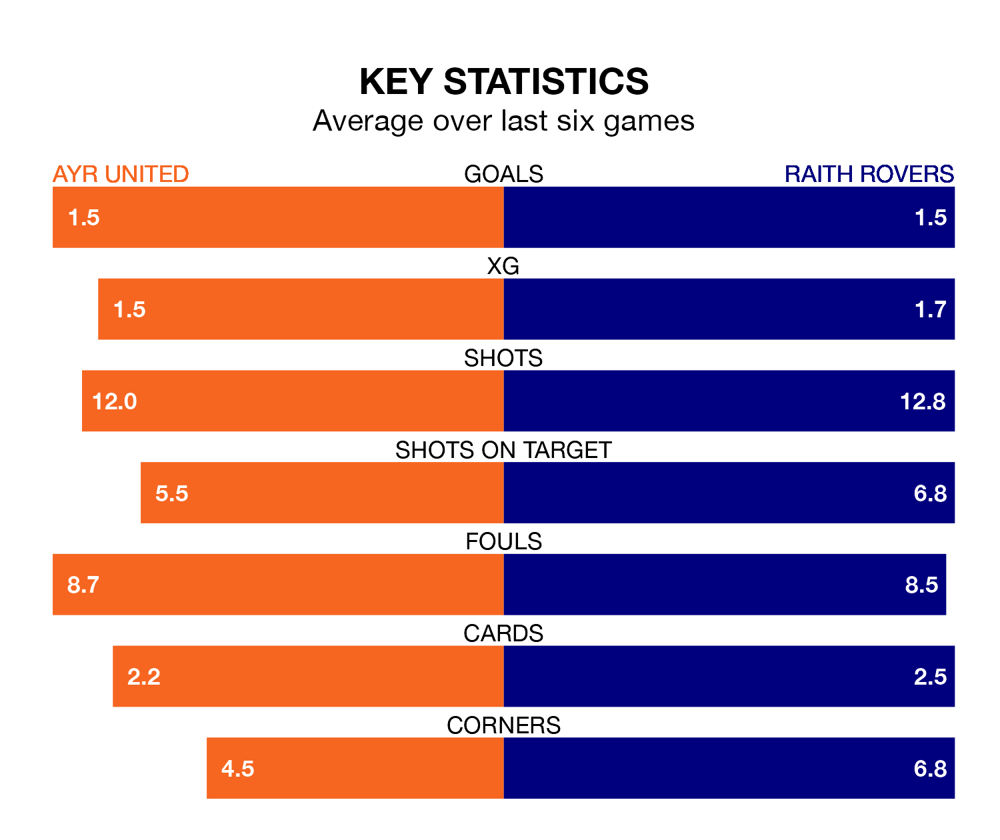

Saturday's match between Ayr United and Raith Rovers promises to be one for the neutrals, as two of the Championship's most free-scoring sides go head-to-head.
Ahead of the game at Somerset Park, the Honest Men and Raith sit fourth and third in the goal-scoring charts, with 33 and 42 goals respectively.
Midfielder Jamie Murphy leads the way for the home side, having bagged six goals in their 24 games to date.
And Lewis Vaughan has been the main man in the opponents' penalty box for Raith, with 11 goals.
Raith are second in the table after 23 games, of which they have won 14 and drawn five, earning 47 points.
Ayr are three places behind Rovers in fifth, with eight wins and five draws putting them on 29 points.
In the last 10 years, Ayr and Raith have played each other on 21 occasions. They won seven each, and they drew seven times.
On average, the Honest Men scored 1.4 goals and Raith 1.0 in those matches.
Their last meeting was on December 22, when they played out a 4-4 draw.
In Charlie Albinson, United can rely on one of the league's safest pair of hands. He has kept four clean sheets in his 18 appearances this season in the Championship.
In the away side's net, Maciej Dabrowski also has four clean sheets in 21 games.
The Honest Men are in mixed form in the Championship, with three wins and a draw from their last six games.
With two wins and a draw over that period, Raith's form is worse – they have taken seven points from 18, compared to the hosts' 10.
Ayr's last match was on February 17, a 3-2 win against Airdrieonians, with Anton Dowds getting the goals for the Honest Men.
Raith beat Dundee United 2-1 last time out, on February 16, with Scott Brown and Zak Rudden on the scoresheet.
Updated: 12:18 (UTC), 19/02/24